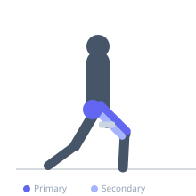

Exercise guide / Walking Lunge
Walking Lunge
The walking lunge is a unilateral lower body exercise that trains the quadriceps, glutes, and hamstrings in a dynamic stepping pattern. By stepping forward and alternating legs, it trains single-leg strength and balance while requiring the muscles of the hip and knee to work through full range of motion.
Primary muscles
rectus femoris
vastus lateralis
vastus medialis
gluteus maximus
Secondary muscles
biceps femoris long head
gluteus medius
Stabilizers
transverse abdominis
Equipment
No Equipment (Bodyweight)
Optional
Dumbbell (Fixed)


Starting position
- Stand tall with feet together and core braced. If using dumbbells, hold one in each hand at the sides.
Setup
- Ensure adequate floor space to walk several meters. Bodyweight is recommended before adding load.
Steps
- Step forward with one leg, landing heel first.
- Lower the rear knee toward the floor until the front thigh is roughly parallel to the floor.
- Drive through the front heel to bring the rear foot forward and step into the next lunge on the other leg.
- Continue alternating legs for the prescribed distance or rep count.
Coaching cues
- Long stride — your shin on the front leg should be close to vertical
- Tall torso throughout — do not let your upper body collapse forward
Breathing
- Exhale as you push off the front foot. Inhale as you step forward.
Range of motion
- Front thigh parallel to floor or lower. Rear knee just above or touching the floor.
Tempo
- Controlled — 1-2 seconds per rep
Common mistakes
- Front knee caving inward — push the knee out in line with the toes
- Leaning excessively forward with the torso
- Taking too short a stride, forcing the knee too far over the toes
Safety
- If knee pain is present, reduce range of motion or switch to a split squat
Training
- hypertrophy: 10–16 reps
- endurance: 16–30 reps
- hypertrophy: 3–4 sets
- endurance: 2–4 sets
- Rest: {'hypertrophy': 90, 'endurance': 45}